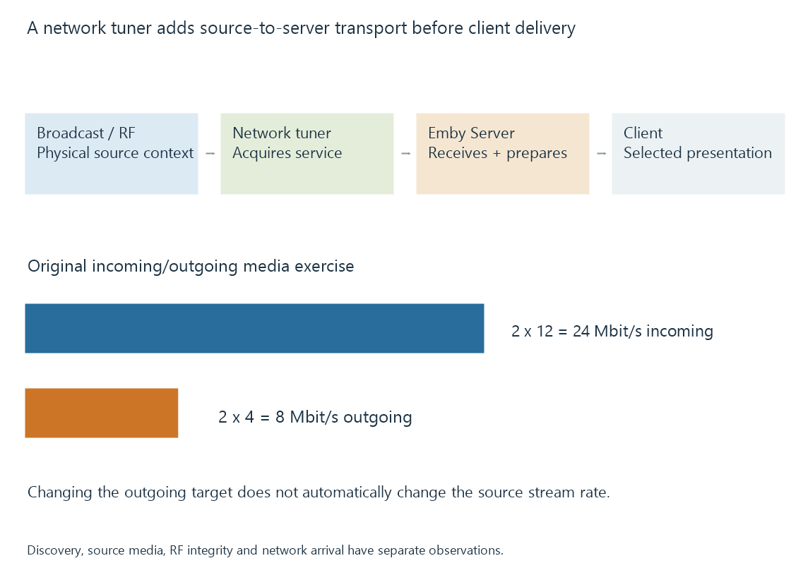

Network TV tuners
A network TV tuner performs broadcast acquisition in a separate device and exposes channel/control and media interfaces over a supported local network route.
A network TV tuner receives broadcast signals in one device, then exposes a supported control/media interface to another device over the network.
The network connection changes where acquisition occurs. It does not remove the need for the tuner’s RF path to recover the selected broadcast.
The route has two delivery boundaries

A tuner can be reachable for discovery or channel-list requests before it has successfully acquired the wanted service. Likewise, its control interface and media stream can have different request and resource conditions.
A channel appearing in a list is evidence of inventory. Usable encoded bytes arriving are evidence of acquisition/delivery progress.
HDHomeRun provides a specific product/API example. Other network tuners can expose different supported interfaces.
Incoming and outgoing traffic differ
For an original model, suppose two different source services each arrive at twelve Mbit/s:
Incoming source media = 2 × 12 = 24 Mbit/s
If Emby produces two client presentations at four Mbit/s each, their outgoing media totals eight Mbit/s.
Those values belong to different boundaries. Reducing the outgoing target does not automatically reduce the original tuner streams entering the server.
The model excludes overhead and sharing. A full-multiplex output or an implemented shared acquisition would have another input relationship.
Capacity lives in several places
The source has finite compatible tuning resources. Its interface can also limit sessions or selected outputs. The local network must carry the exposed stream, and the server/client path needs its own preparation capacity.
A new client can share an existing acquisition only if the implemented route provides that sharing. Having the same channel name in two clients is not sufficient evidence.
Tuner concurrency distinguishes those policies.
An RF fault and a network fault can resemble each other
Unusable data can arise before the source produces its stream or after it begins sending packets. Blocked reception and network loss can both interrupt the final picture.
Receiver RF/error observations describe the earlier boundary. Tuner packet/output statistics and server arrival describe later ones.
If the tuner’s usable output remains continuous but the server receives gaps, that is different evidence from the tuner already reporting uncorrectable reception errors. The observation needs the same interval and source identity to connect the stages.
See Also
- HDHomeRun network tuner routes
- Tuner concurrency and shared acquisition
- Broadcast multiplexes
- How a media server delivers playback